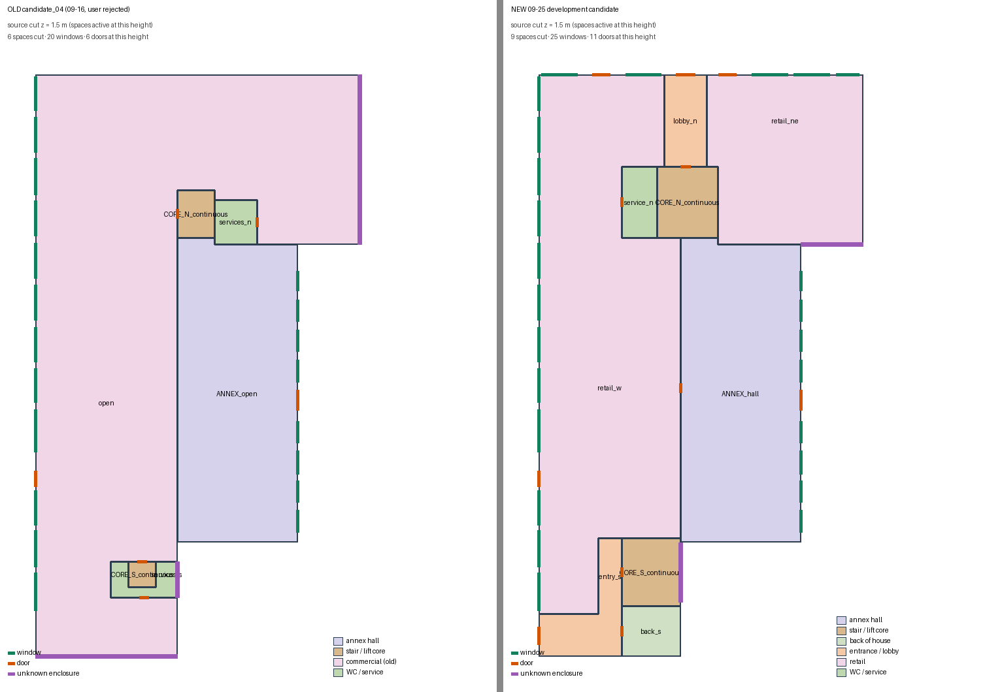
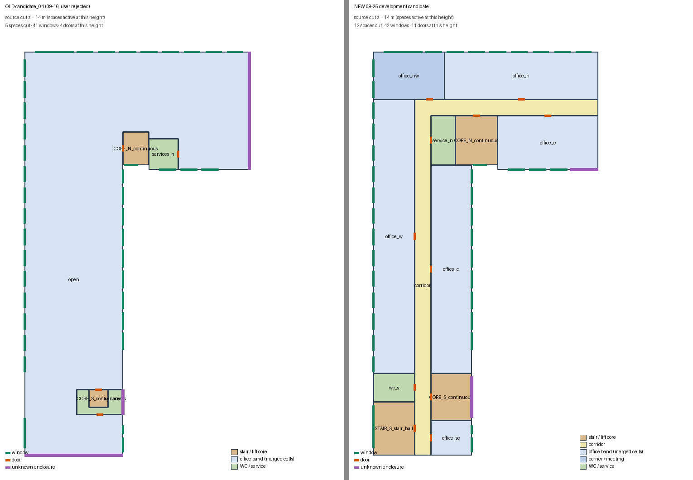
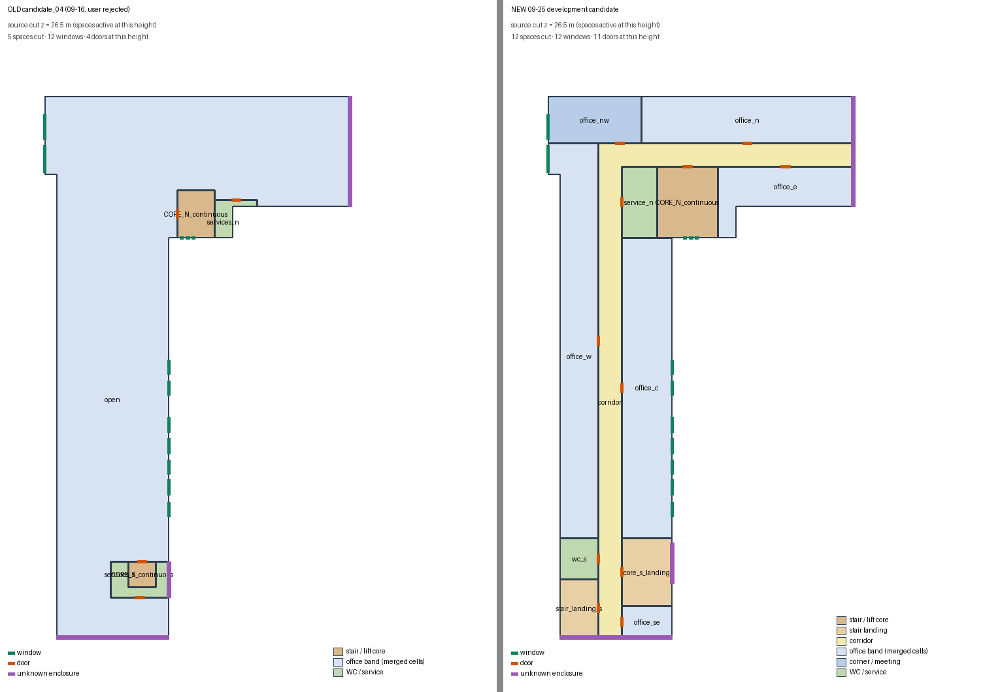

Opus 5.5 开发助手在 09-16 candidate_04 的外壳/楼层/开口之上重做内部组织，并补全扫描缺失处的合理围护与开口。不是工作模型成绩，也不是真实内部复原；所有内部分隔与门都是与外部观测约束相容的方案假设。
新候选：80个源空间体 · 300组窗（其中5组为北面首层补全推断） · 88处门 · 15个含未知区域的边界。
旧 candidate_04：32个空间体 · 287组窗 · 34处门 · 24个未知边界。空间数增加不是成功标准。
打开旋转查看（原纹理/BIM/叠合） · 原网格叠图与剖切 · 旧候选查看页（对照） · 源BIM · 源检查报告 · 方案与依据 · 验证 · 说明
| 边界 | 内容 |
|---|---|
| 观测（原网格/纹理） | 沿用：外壳、八层标高、退台与屋盖五部件、287组窗坐标、西侧店面玻璃与玻璃店门。本轮新看/新量：两短端扫描系统性缺失与相邻屋面剪影；南端沿街玻璃组（每层两道横带）及其旁8组此前未入清单的沿街窗；南北屋顶凸起；内院被裁凸出体的扫描洞与部分可见的多格玻璃列 |
| 推断（本轮新增，均可调整） | 双面走廊办公组织：L形走廊连通南北两端交通组；南端主楼梯间（高玻璃竖带后）+西南主入口、电梯/服务核、卫生间；北端转角楼梯电梯核+服务间；西北角会议/大办公室；首层零售、门厅、后勤；北面首层店面窗5组与3处门、西南主入口门；两短端判为无窗贴邻山墙 |
| 简化（本档合并） | 同侧连续单间办公室合并为一个办公带；首层零售租户合并；附属低体一个大厅；每对空间一扇代表门；楼梯梯段/电梯井不建实体；屋盖棱柱近似 |
| 仍未知（保留为未知或未建） | 真实内部隔墙与门位；内院被裁凸出体的深度/用途；短翼内院东端扫描洞；退台两端开口；首层内院缺面；内院南端多格玻璃竖带与暗槽的语义 |


